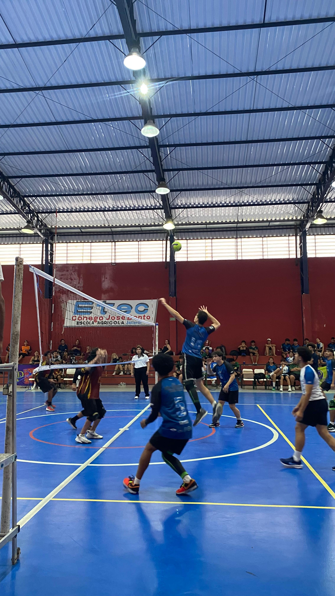
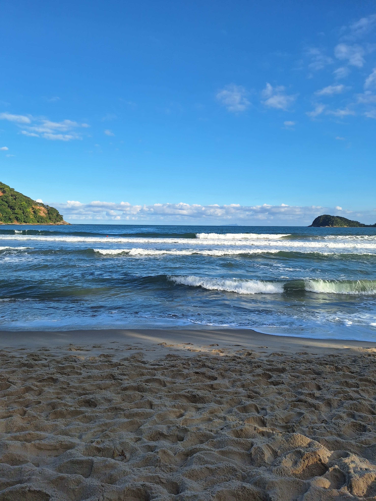
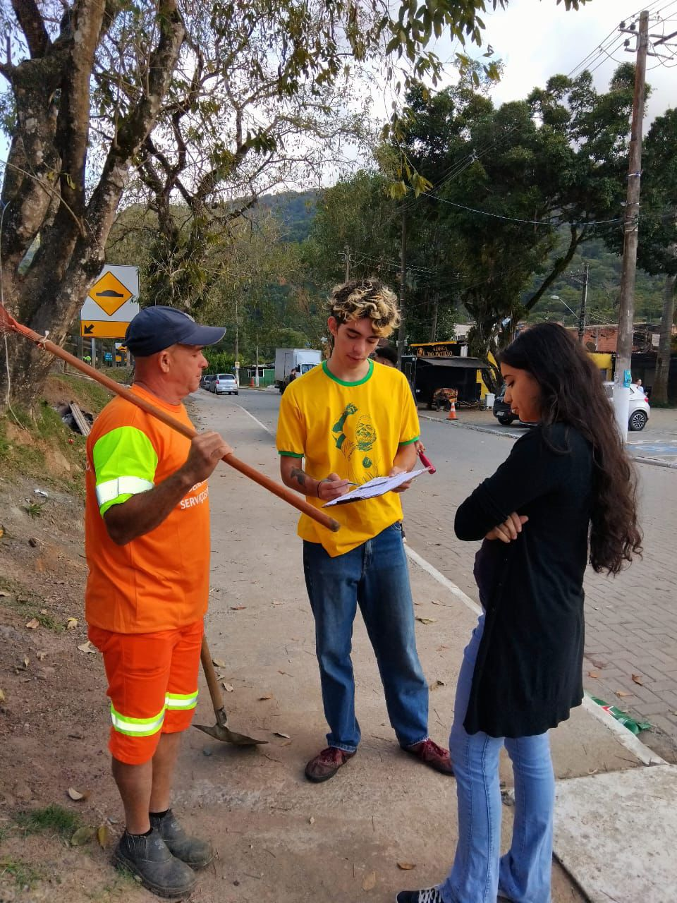
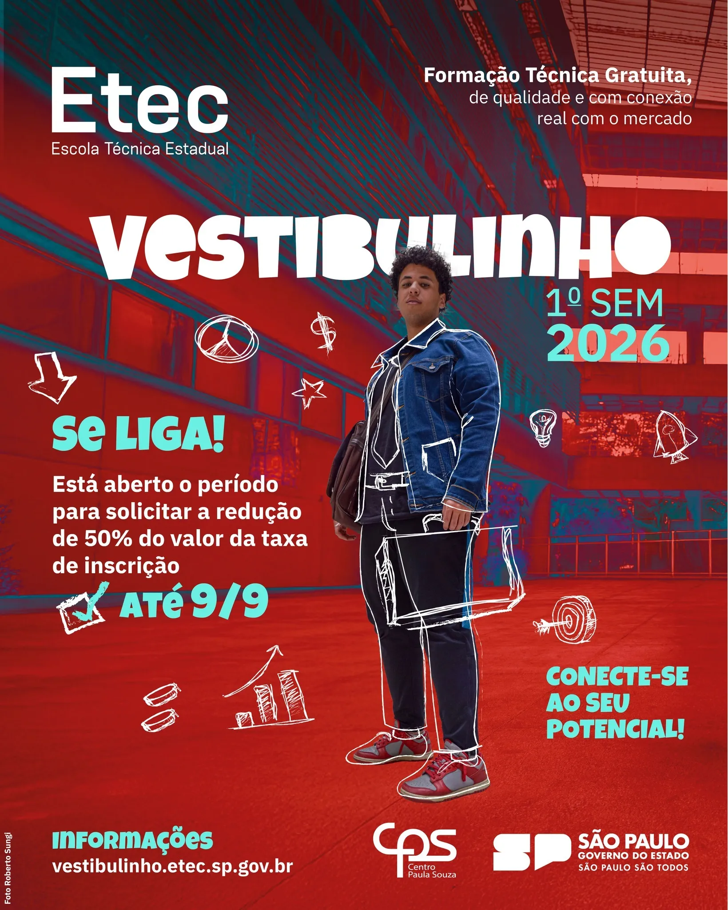
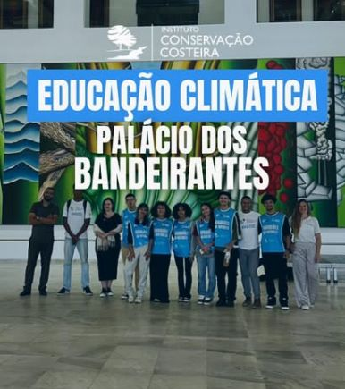
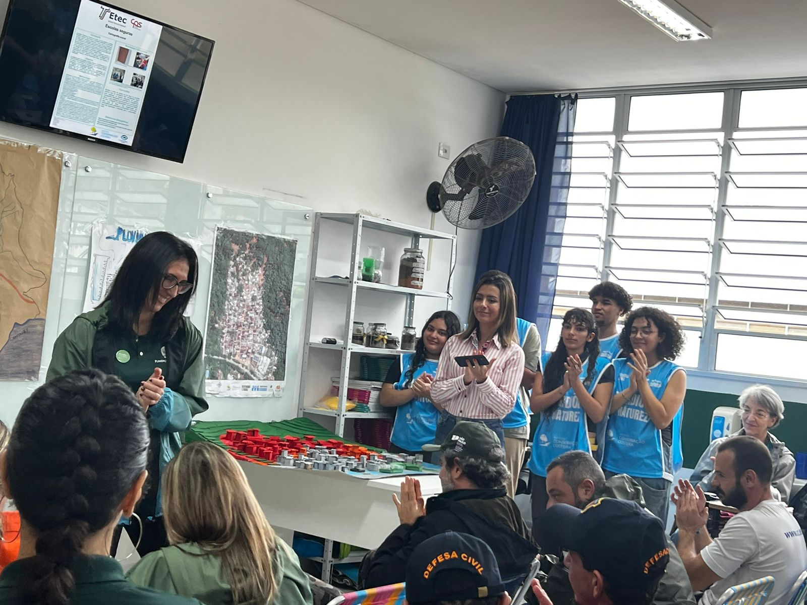

Etec de São Sebastião no pódio de Jacareí
Os estudantes da ETEC de São Sebastião brilharam na Copa ETEC 2025, conquistando medalhas em diversas modalidades esportivas e demonstrando espírito de equipe e dedicação aos treinos.
Leia mais 22.12.39_ae84bdc0.jpg)


Os estudantes da ETEC de São Sebastião brilharam na Copa ETEC 2025, conquistando medalhas em diversas modalidades esportivas e demonstrando espírito de equipe e dedicação aos treinos.
Leia mais
Os alunos do 2º e 3º anos do Ensino Médio Técnico em Marketing da Etec de São Sebastião - CD Verdescola estão vivenciando uma prática de aprendizado que extrapola os limites da sala de aula.
Leia mais
O Vestibulinho é o processo seletivo utilizado para ingressar nos cursos das Escolas Técnicas Estaduais (Etecs) de São Paulo...
Leia mais
A convite da Defesa Civil, o Instituto Conservação Costeira e os estudantes da ETEC do Projeto Escolas Seguras participaram do Lançamento da Operação SP Sempre Alerta de Chuvas, no Palácio dos Bandeirantes.
Leia mais
O Projeto Escolas Seguras, uma iniciativa do Instituto Conservação Costeira (ICC), está transformando a realidade de quatro escolas em São Sebastião, no litoral de São Paulo. Em visita de acompanhamento do educador da equipe do CEdu...
Leia maisTem alguma notícia interessante da escola? Compartilhe conosco!
Enviar Notícia